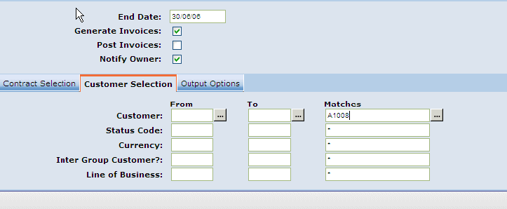
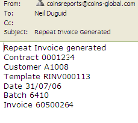
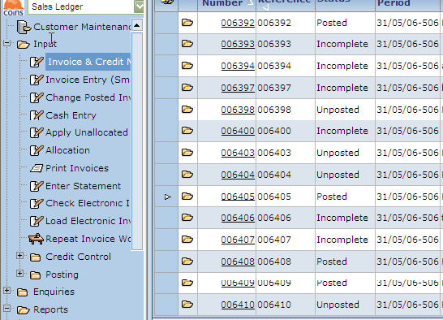
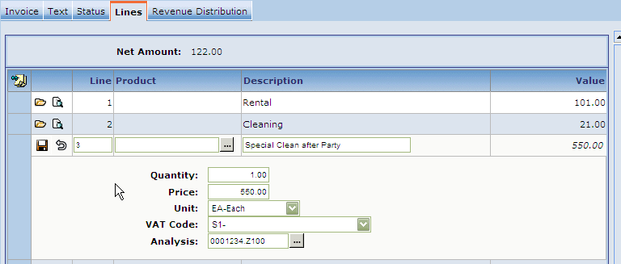
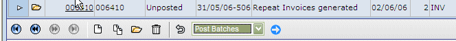

In order to generate unposted invoices so they can be edited before posting, use Generate Repeat Invoices as described in Generating and Posting Invoices except do not

The owner will receive email notification.

Once generated, the unposted invoices can be edited in either
Choose Input | Invoice and Credit Note Entry from the
Choose the Invoice Batch.

Choose lines.
Add a charge.

Select the relevant batches and "Choose Action" to post.
